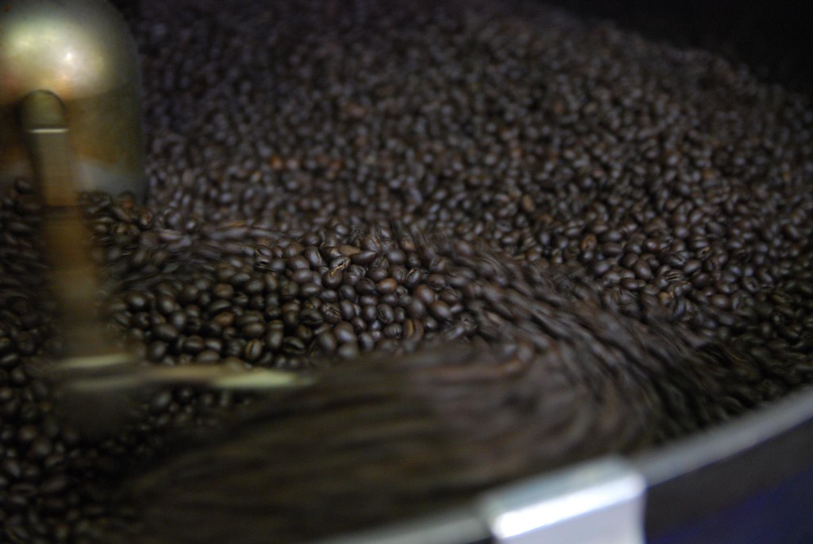

Brewing Methods

Every method below makes good coffee. They differ in how much you have to pay attention, how long they take, and how heavy the finished cup tastes. Start with whichever one fits your mornings.
No Equipment Needed
These take almost nothing to start and are hard to get wrong, which makes them a good first step.
- Cold brew, 12 hours, one jar and a strainer
- Instant coffee, 1 minute, a kettle
- Cowboy coffee, 5 minutes, a pot on the stove
One Small Purchase
Each of these needs a single item you can find for under twenty dollars, and each one gives you real control over the result.
- French press, 5 minutes, heavy and full flavored
- Pour over cone, 4 minutes, clean and bright
- AeroPress, 2 minutes, strong and smooth
Worth Trying Later
These take more practice or more money, so save them until you know what kind of coffee you actually like.
- Moka pot, 6 minutes, very strong and thick
- Siphon brewer, 10 minutes, delicate and tea-like
- Espresso machine, 1 minute, concentrated and sharp
Not Sure Where to Start?
Tell us how much time you have in the morning and we will point you to one method to try first.